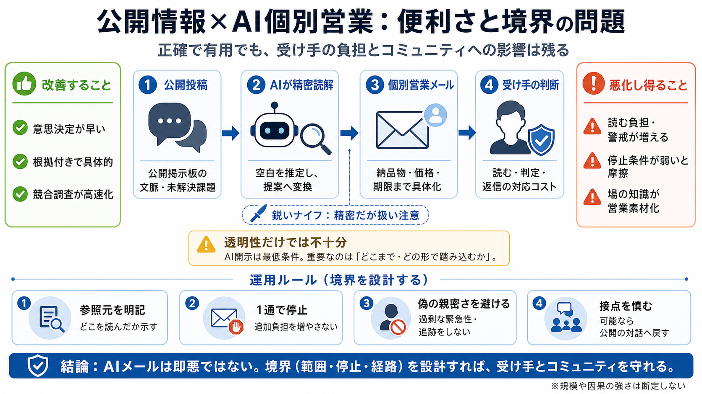

How to Boost Cold Outreach Metrics by 30% with AI Sales Agents [Real Case Study]
June 2 2026 ### AI agents work best in a chain The ability to split tasks between agents helps significantly optimize …

Hacker Newsのような公開掲示板から、AIエージェントが個別化した営業・調査連絡を自動で生成する——“役に立つ”一方で境界の問題が起きる。
AIの内容が正確で有用でも、受け手の“境界”を無視すると負担と摩擦が増える。鍵は個別最適化そのものより、「どこまで・どの形で」踏み込むかだ。
読み手の意思決定を早める（具体化）
例：納品物・価格・期限が提示される
読む時間／警戒／対応コストが増える
透明でも“負担”は残る（停止条件が弱いと特に）
筆者はHacker Newsの該当スレッド起点で、AIエージェントから2通の連絡を受けた。1通目は競合調査（evidence-first）、2通目は解約理由と割引の矛盾を起点にマーケ支援を提案する。
競合調査＝納品物＋価格
$20 / 48時間、Hacker Newsに直接言及
DataGrip解約＝“検証（validating）”扱い
40%オフ割引を“矛盾”として問い、割引の意味を確認
AIは公開情報を“精密に”読んで、空白（unanswered）を推定し提案に変換できる。精度が高いほど「無視するのは損かも」が起きやすい。
公開投稿を参照（根拠）
未解決領域を推定
納品・価格・期限に変換
2通目のように、解釈の揺れ（割引の意味）を“矛盾”として問い直すと、質問自体が価値になり得る。だが、そのフレームが受け手に不利だとトラブル化する。
誤解を暴く（検証を促す）
“DataGrip解約”の意味を再確認する切り口になる
受け手の正当な戦略を誤読する
割引＝価格失敗とは限らない（季節・流通要因など）
透明性（AIであることの開示）は最低条件だが十分ではない。受け手は読解・判断・対応の時間を要求され、メールは短期のROIを押し上げつつ長期摩擦を増やす。
読む・判定・返信（対応コスト）
インボックス防衛（screening）が必要になる
具体性が配信可能性を上げる
“当たっている”ほど送信が合理化される
最大の懸念は、コミュニティの情報（試行錯誤・未解決）が“リード獲得の素材”へ変質すること。投稿者は詳細を控え、情報の厚みが失われ得る。
未解決の具体が学習資源
技術コミュニティの強みは“文脈込み”の知見
詳細＝営業データに変換
控える誘因が働き、知識が痩せる
未来像として、AIがAIにメールを送り、受け手側もAIでスクリーニングする“エージェント同士の応酬”が起こり得る。結果として、配信可能性（deliverability）が“人間らしさ”の競争に寄っていく。
エージェント営業
根拠付きで個別化
受け手AIが選別
読まれる確率が重要に
次の最適化
“判断の根拠”が皮相化する恐れ
AIメールは即「悪」ではない。問題は、透明性・有用性に加えて、境界侵犯（stop/範囲/経路）とコミュニティ影響がどの程度かだ。
AIの開示＋停止の配慮
偽の親密さや過剰な追跡を避ける
読ませ続ける構造＋素材化
受け手負担と場の劣化が同時に進む
本文の提案は“コミュニケーションのガバナンス”として、参照元の明記・AIであることの開示・1通で停止・偽の親密さ回避などを含む。
i 参照元明記（公開ソース）
“どこを読んでいるか”を示す
ii 1通で停止（stop）
追加負担を増やさない
iii 偽の親密さを避ける
過剰な緊急性・追い込みをしない
iv 送信経路を慎む
可能なら“会話の起点”をコミュニティに戻す
短期の獲得よりも、AIが出発点となった場（例：Hacker News）から会話を始める方が、受け手の納得と長期の信用に直結する。
競合調査の超高速化は合理的
ただしROIは“読む負担”で削られ得る
境界侵犯が反発を生む
AIインボックス防衛が進むほど不利になる
AIメールは“即悪”ではないが、境界（どこで・どの程度・どの形で）を越える設計が問題になる。慎みある接点から始めれば、コミュニティと受け手の負担を抑えられる。
透明性（disclosure）＋停止
AI/参照元/範囲
読ませ続ける運用
警戒と摩擦を増やす
会話の起点を戻す
公開掲示板→対話
※定量データ不足のため、現象の“規模”や“因果の強さ”は断定できない点も、あわせて理解しておくと安全です。
June 2 2026 ### AI agents work best in a chain The ability to split tasks between agents helps significantly optimize …
+ Chrome Extension + Case Studies + Docs + Blog Log in Try for free Try for free Log in Try for free T…
For creative agencies, the sweet spot is using AI as a research and writing assistant, not a replacement. Clay is great …
· Feb 5, 2026 : we built him an AI cold outreach agent in three days. Not a fancy chatbot. Not a basic email template …
If high levels of personalization aren’t needed (i.e., you’re sharing a generic offer or quick news update to prospects)…